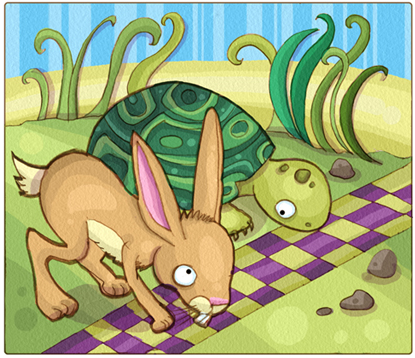
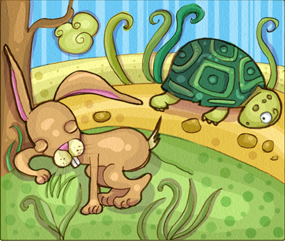
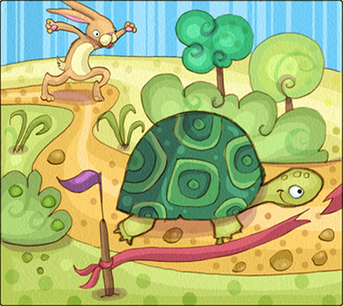

Introducción
En el mundo de los animales vivía una liebre muy orgullosa y vanidosa, que no cesaba de pregonar que ella era el animal más veloz del bosque, y que se pasaba el día burlándose de la lentitud de la tortuga.
- ¡Eh, tortuga, no corras tanto! Decía la liebre riéndose de la tortuga.
Un día, a la tortuga se le ocurrió hacerle una inusual apuesta a la liebre:
- Liebre, ¿vamos hacer una carrera? Estoy segura de poder ganarte.
- ¿A mí? Preguntó asombrada la liebre.
- Sí, sí, a ti, dijo la tortuga. Pongamos nuestras apuestas y veamos quién gana la carrera.
La liebre, muy engreída, aceptó la apuesta prontamente.
La carrera
Así que todos los animales se reunieron para presenciar la carrera. El búho ha sido el responsable de señalizar los puntos de partida y de llegada. Y así empezó la carrera:
La liebre, mientras tanto, confiando en que la tortuga tardaría mucho en alcanzarla, se detuvo a la mitad del camino ante un frondoso y verde árbol, y se puso a descansar antes de terminar la carrera. Allí se quedó dormida, mientras la tortuga seguía caminando, paso tras paso, lentamente, pero sin detenerse.
El final
No se sabe cuánto tiempo la liebre se quedó dormida, pero cuando ella se despertó, vio con pavor que la tortuga se encontraba a tan solo tres pasos de la meta. En un sobresalto, salió corriendo con todas sus fuerzas, pero ya era muy tarde: ¡la tortuga había alcanzado la meta y ganado la carrera!
Ese día la liebre aprendió, en medio de una gran humillación, que no hay que burlarse jamás de los demás. También aprendió que el exceso de confianza y de vanidad, es un obstáculo para alcanzar nuestros objetivos. Y que nadie, absolutamente nadie, es mejor que nadie.
Conclusiones
Esta fábula enseña a los niños que no hay que burlarse jamás de los demás y que el exceso de confianza puede ser un obstáculo para alcanzar nuestros objetivos.